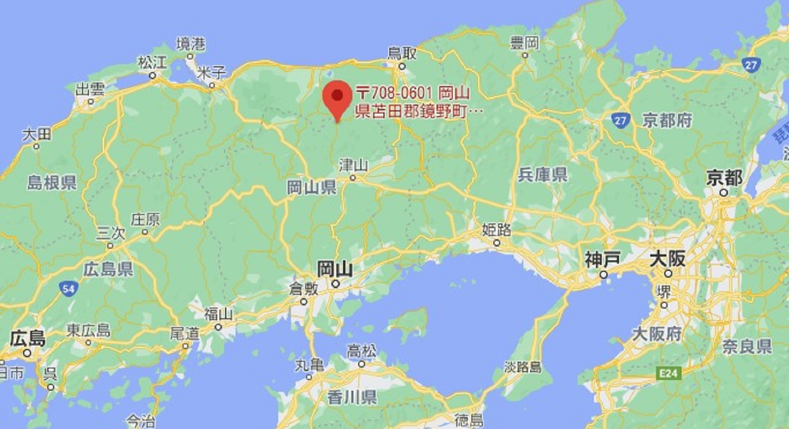

<!doctype html>
<html lang="ja">
  <head>
    <!-- Required meta tags -->
    <meta charset="utf-8">
    <meta name="viewport" content="width=device-width, initial-scale=1, shrink-to-fit=no">

    <!-- Bootstrap CSSの読み込み -->
    <link rel="stylesheet" href="https://stackpath.bootstrapcdn.com/bootstrap/4.5.2/css/bootstrap.min.css" integrity="sha384-JcKb8q3iqJ61gNV9KGb8thSsNjpSL0n8PARn9HuZOnIxN0hoP+VmmDGMN5t9UJ0Z" crossorigin="anonymous">

    <title>農家民宿 藤木農園</title>
  </head>
  <body>

    <!-- Optional JavaScript -->
    <!-- jQuery first, Popper.js, Bootstrap JSの順番に読み込む -->
    <script src="https://code.jquery.com/jquery-3.5.1.slim.min.js" integrity="sha384-DfXdz2htPH0lsSSs5nCTpuj/zy4C+OGpamoFVy38MVBnE+IbbVYUew+OrCXaRkfj" crossorigin="anonymous"></script>
    <script src="https://cdn.jsdelivr.net/npm/popper.js@1.16.1/dist/umd/popper.min.js" integrity="sha384-9/reFTGAW83EW2RDu2S0VKaIzap3H66lZH81PoYlFhbGU+6BZp6G7niu735Sk7lN" crossorigin="anonymous"></script>
    <script src="https://stackpath.bootstrapcdn.com/bootstrap/4.5.2/js/bootstrap.min.js" integrity="sha384-B4gt1jrGC7Jh4AgTPSdUtOBvfO8shuf57BaghqFfPlYxofvL8/KUEfYiJOMMV+rV" crossorigin="anonymous"></script>
  </body>
</html>


 <!-- ナビゲーションメニュー -->
    <nav class="navbar navbar-expand-lg navbar-light bg-light">
        <a class="navbar-brand text-dark" href="#">農家民宿 藤木農園</a>
    </nav>


   <!-- スライダー -->
  <div id="carouselExampleIndicators" class="carousel slide" data-ride="carousel">
       <ol class="carousel-indicators">
         <li data-target="#carouselExampleIndicators" data-slide-to="0" class="active"></li>
         <li data-target="#carouselExampleIndicators" data-slide-to="1"></li>
         <li data-target="#carouselExampleIndicators" data-slide-to="2"></li>
       </ol>
       <div class="carousel-inner">
         <div class="carousel-item active">
           
         </div>
         <div class="carousel-item">
           
         </div>
         <div class="carousel-item">
           
         </div>
       </div>
       <a class="carousel-control-prev" href="#carouselExampleIndicators" role="button" data-slide="prev">
         <span class="carousel-control-prev-icon" aria-hidden="true"></span>
         <span class="sr-only">Previous</span>
       </a>
       <a class="carousel-control-next" href="#carouselExampleIndicators" role="button" data-slide="next">
         <span class="carousel-control-next-icon" aria-hidden="true"></span>
         <span class="sr-only">Next</span>
       </a>
   </div>

 <!-- メニュー -->
</div><div style="margin-bottom:10px"></div>
 <div class="border col-12">

        <div class="row">
            <div class="col-md">
            	<div class="btn-group btn-group-sm">
	                <a href="link1.html" class="btn btn-outline-secondary btn-sm" role="button">宿泊プラン</a>
	                <a href="link2.html" class="btn btn-outline-secondary btn-sm" role="button">農業体験</a>
	                <a href="link3.html" class="btn btn-outline-secondary btn-sm" role="button">施設案内</a>
	                <a href="link4.html" class="btn btn-outline-secondary btn-sm" role="button">アクセス</a>
	            </div>
            </div>
        </div>
   <div class="text-right"> <a href="index.html" class="btn btn-default btn-sm" role="button"><u>ホームへ戻る</u></a> </div>
    </div>
</div><div style="margin-bottom:10px"></div>
<!--aaaaaaaaaaaaaaaaaaaaaaaaaaaaaaaaaaaaaaaaaaaaaaaaaaaaaaaaaaaaaaaaaaaaaaaaaaaaaaaaaaa-->
    <h4>~ アクセス ~</h4>
    <p>所在地　　岡山県苫田郡鏡野町上齋原698-3</p>
    <!-- 問合せフォーム --><!--aaaaaaaaaaaaaaaaaaaaaaaaaaaaaaaaaaaaaaaaaaaaaaaaaaaaaaaaaaaaaaaaaaaaaaaaaaaaaaaaaaa-->
          <div class="media">
          <a href="https://www.google.com/maps/place/%E3%80%92708-0601+%E5%B2%A1%E5%B1%B1%E7%9C%8C%E8%8B%AB%E7%94%B0%E9%83%A1%E9%8F%A1%E9%87%8E%E7%94%BA%E4%B8%8A%E9%BD%8B%E5%8E%9F%EF%BC%96%EF%BC%99%EF%BC%98%E2%88%92%EF%BC%93/@35.283667,133.9248464,17z/data=!3m1!4b1!4m5!3m4!1s0x3555d1c1d361b383:0xc1ecd73b9e54993e!8m2!3d35.283667!4d133.9270351">
                
                  </a>
                    <div class="media-body">
                      <h5 class="mt-0">GoogleMap</h5>
                  </div>

          </div>

<p><br></P>

      <p>
      ・大阪方面から中国自動車道　<br>
      　院庄IC R179 奥津温泉・上齋原方向 約30分<br>
      ・鳥取県倉吉方面からR179 人形トンネル経由 約30分<br>
      ・広島・倉敷方面から 山陽道（倉敷IC）<br>
      　→岡山道（北房JC）→中国道（院庄IC）→R179</p>


   <!-- フッター --><!--aaaaaaaaaaaaaaaaaaaaaaaaaaaaaaaaaaaaaaaaaaaaaaaaaaaaaaaaaaaaaaaaaaaaaaaaaaaaaaaaaaa-->
    <footer class="text-center bg-dark text-white">
        <p class="py-3">農家民宿 藤木農園</p>
    </footer>
